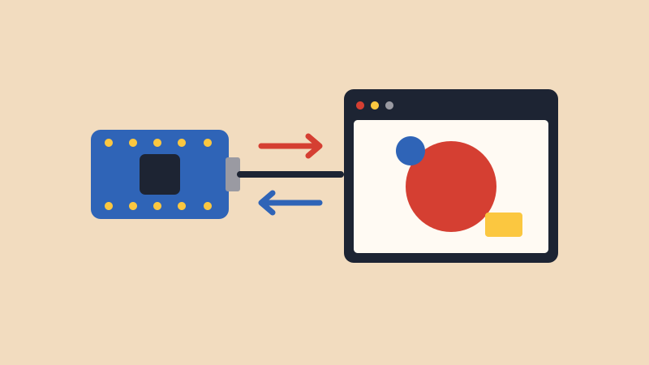

p5.js is a
way to draw and make interactive things with code in your
browser. A p5.js sketch looks a lot like an Arduino sketch:
setup() runs once, and draw() runs
over and over, like loop().
Your Arduino and a p5.js sketch can talk to each other through the USB cable. This is the same serial connection the Serial Monitor uses, so your sensors can control what’s on screen, and what’s on screen can control your Arduino.
We’ll use a library called p5.webserial, which handles the connection for you.
p5.js):<script src="https://unpkg.com/@gohai/p5.webserial@1/libraries/p5.webserial.js"></script>WarningClose the Serial Monitor and Serial Plotter before you connect. Only one program can use the board at a time. To upload a new Arduino sketch, stop your p5.js sketch first.
Let’s make a circle grow and shrink with your sensor.
Arduino: this sends a reading about 50 times a second, as a line of text.
void setup() {
Serial.begin(9600);
}
void loop() {
Serial.println(analogRead(A0));
delay(20);
}p5.js:
let port;
let reading = 0;
function setup() {
createCanvas(400, 400);
port = createSerial();
// browsers only let you choose a board after you click something
let button = createButton("Connect Arduino");
button.mousePressed(connectArduino);
}
function connectArduino() {
if (!port.opened()) {
port.open("Arduino", 9600);
}
}
function draw() {
background(240);
// get one line of text from the Arduino, if a whole line has arrived
let message = port.readUntil("\n");
if (message.length > 0) {
reading = Number(message);
}
let size = map(reading, 0, 1023, 10, 380);
circle(width / 2, height / 2, size);
}Click the play button, then Connect Arduino. Choose your board in the list and click Connect. Now turn the potentiometer, or cover the photoresistor.
port.readUntil("\n") gives you
one line of text. Serial.println() ends each line
with \n, so you get one reading at a time. It gives
you empty text if no whole line has arrived yet.Number(message) turns the text
"512" into the number 512.map() works just like it does
on the Arduino.Now let’s go the other way: clicking in the browser turns on the Arduino’s built-in LED.
Arduino: this is the same
Serial.read() from the Keyboard lesson.
void setup() {
Serial.begin(9600);
pinMode(LED_BUILTIN, OUTPUT);
}
void loop() {
if (Serial.available() > 0) {
char letter = Serial.read();
if (letter == 'A') {
digitalWrite(LED_BUILTIN, HIGH);
}
if (letter == 'B') {
digitalWrite(LED_BUILTIN, LOW);
}
}
}p5.js:
let port;
let ledOn = false;
function setup() {
let canvas = createCanvas(400, 400);
canvas.mousePressed(toggleLed);
port = createSerial();
let button = createButton("Connect Arduino");
button.mousePressed(connectArduino);
}
function connectArduino() {
if (!port.opened()) {
port.open("Arduino", 9600);
}
}
function toggleLed() {
if (!port.opened()) {
return;
}
ledOn = !ledOn;
if (ledOn) {
port.write("A");
} else {
port.write("B");
}
}
function draw() {
if (ledOn) {
background(251, 199, 64);
} else {
background(29, 36, 51);
}
}Connect, then click on the canvas. The canvas and the LED should change together.
To send more than one number, put commas between them on one line. Your board’s built-in accelerometer is a good example, because it has three numbers and needs no wiring. Install Arduino_LSM6DS3 from the Library Manager if you don’t have it.
Arduino:
#include <Arduino_LSM6DS3.h>
void setup() {
Serial.begin(9600);
IMU.begin();
}
void loop() {
float x, y, z;
if (IMU.accelerationAvailable()) {
IMU.readAcceleration(x, y, z);
Serial.print(x);
Serial.print(",");
Serial.print(y);
Serial.print(",");
Serial.println(z);
}
delay(20);
}p5.js: tilting the board moves the circle.
let port;
let tiltX = 0;
let tiltY = 0;
function setup() {
createCanvas(400, 400);
port = createSerial();
let button = createButton("Connect Arduino");
button.mousePressed(connectArduino);
}
function connectArduino() {
if (!port.opened()) {
port.open("Arduino", 9600);
}
}
function draw() {
background(240);
let message = port.readUntil("\n");
if (message.length > 0) {
// "0.12,-0.34,0.98" becomes three separate pieces
let parts = message.split(",");
tiltX = Number(parts[0]);
tiltY = Number(parts[1]);
}
let circleX = map(tiltY, -1, 1, 0, width);
let circleY = map(tiltX, -1, 1, 0, height);
circle(circleX, circleY, 60);
}If the circle moves the wrong way, swap the last two numbers
in that map(), like
map(tiltY, -1, 1, width, 0).
The Teachable Machine tutorial has a page that does this for you. To build your own, you can use your model in a p5.js sketch with another library called ml5.js. Follow that tutorial first to train your model and get its link.
In index.html, add ml5.js along with p5.webserial:
<script src="https://unpkg.com/ml5@1.4.0/dist/ml5.min.js"></script>Arduino: use the same sketch as in Part 2.
p5.js: change modelLink to your
link, and change "Class 1" to the name of your own
class.
let modelLink = "https://teachablemachine.withgoogle.com/models/YOUR_MODEL/";
let port;
let video;
let label = "Loading your model...";
let lastLabel = "";
async function setup() {
createCanvas(320, 280);
video = createCapture(VIDEO, { flipped: true });
video.size(320, 240);
video.hide();
port = createSerial();
let button = createButton("Connect Arduino");
button.mousePressed(connectArduino);
// flipped: Teachable Machine mirrors the webcam when you train
let classifier = await ml5.imageClassifier(modelLink + "model.json", { flipped: true });
classifier.classifyStart(video, gotResult);
}
function connectArduino() {
if (!port.opened()) {
port.open("Arduino", 9600);
}
}
// this runs each time the model has a new answer
function gotResult(results) {
label = results[0].label;
// only send a letter when the answer changes
if (label !== lastLabel && port.opened()) {
if (label === "Class 1") {
port.write("A");
} else {
port.write("B");
}
lastLabel = label;
}
}
function draw() {
background(255);
image(video, 0, 0, 320, 240);
textSize(24);
text(label, 10, 270);
}results is a list of every class, with the most
likely one first. Each one has a label and a
confidence from 0 to 1. To only trust answers the
model is sure about, check results[0].confidence
too.
createSerial is not defined.
The p5.webserial line is missing from
index.html, or it’s above the line that loads
p5.js.ml5 is not defined. The ml5.js
line is missing from index.html.